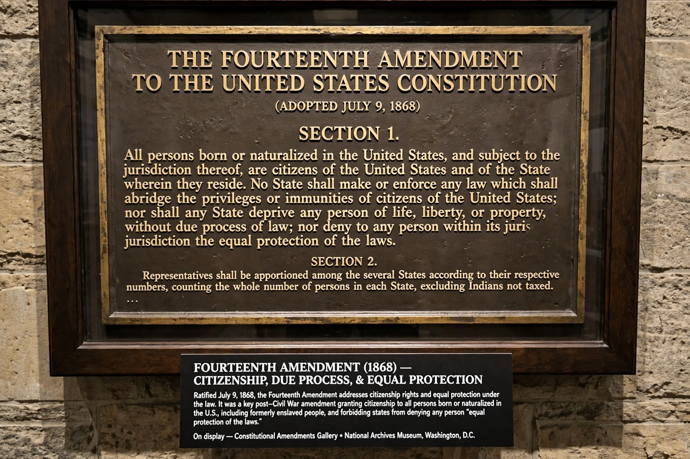

Due Process Clause
From Wikipedia, the free encyclopedia

A Due Process Clause is a constitutional guarantee that a government may not deprive a person of life, liberty or property without due process of law. The phrase appears twice in the Constitution of the United States: in the Fifth Amendment (binding the federal government) and in the Fourteenth Amendment (binding the states, Section 1) — the latter being the vehicle of Incorporation of the Bill of Rights and of substantive due process doctrine.
Procedural due process
At its core the clause guarantees fair procedures: notice, a hearing before an impartial tribunal, the opportunity to present evidence — applied through balancing tests (Mathews v. Eldridge, 1976) across criminal trials, administrative action, school discipline and property seizures. Its lineage runs to clause 39 of Magna Carta ('by the law of the land').
Substantive due process
The courts have also read 'liberty' substantively, protecting unenumerated rights — notoriously in the Lochner era's defence of freedom of contract (1905–37), repudiated during the New Deal, and, from the 1960s, in privacy and autonomy cases (Griswold, Roe, Obergefell) — several curtailed again by Dobbs (2022). The doctrine's legitimacy is a perennial front in American constitutional war, originalists tending to locate rights in the Privileges or Immunities Clause instead.